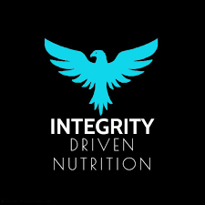
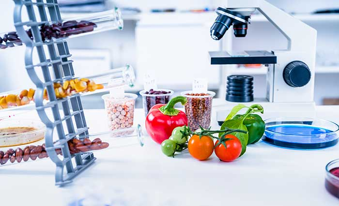
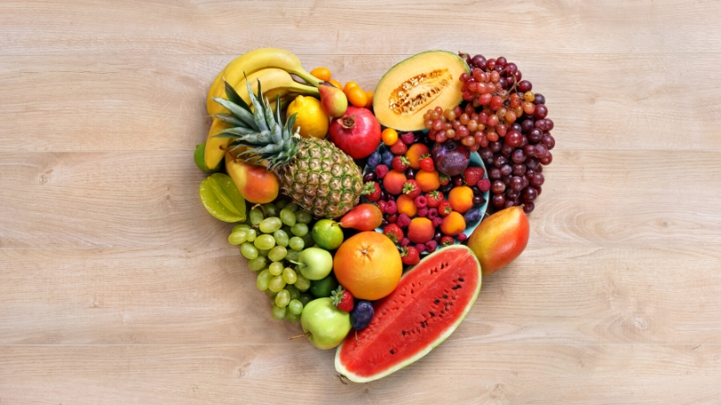

About NutriC
Your journey to a healthier life begins here. Discover nutrition and wellness insights to help you thrive.
Our Core Values

Integrity
We uphold the highest standards in all we do, ensuring that our information is accurate, trustworthy, and evidence-based.

Innovation
We strive to bring fresh, innovative approaches to nutritional education and wellness.

Compassion
We care deeply about our community and are dedicated to helping everyone lead healthier lives.
Our Story
NutriC was founded with a single vision: to make nutrition education accessible to everyone. Our journey began as a small initiative, driven by a deep commitment to empower individuals to make healthier choices...
Join Our Community
Are you ready to take the first step towards a healthier life? Join our community for exclusive tips, resources, and updates.